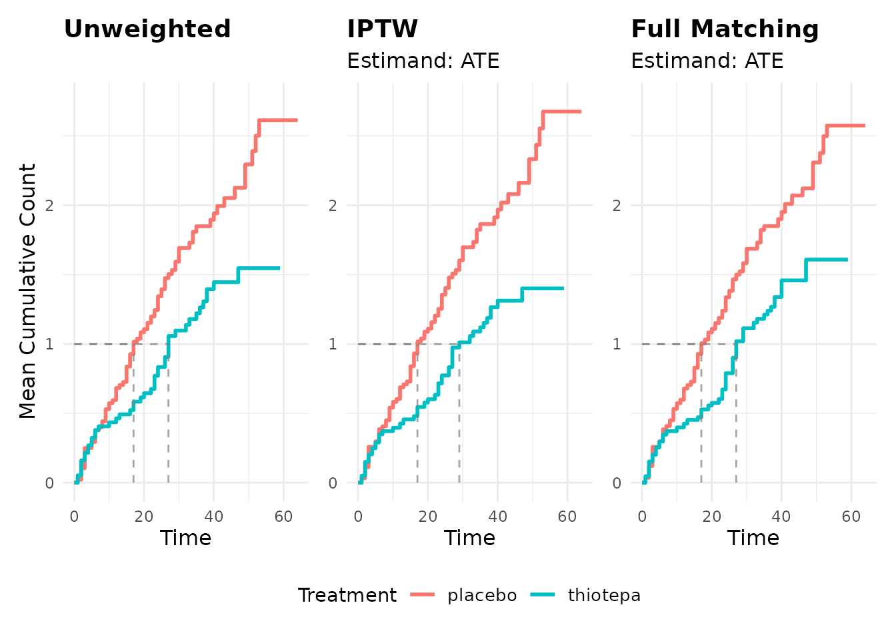

Estimating MCC After Matching or Weighting
Source:vignettes/estimating-mcc-after-matching-or-weighting.Rmd
estimating-mcc-after-matching-or-weighting.RmdIntroduction
Treatment assignment is not randomized in observational studies of recurrent events, which can lead to confounding bias when estimating causal effects. The mean cumulative count (MCC) can be estimated after applying propensity score methods to address confounding, following the approach described by Gaber, et al.1
This vignette demonstrates how to:
- Use inverse probability of treatment weighting (IPTW) with MCC estimation
- Apply MCC estimation after various propensity score matching methods
- Interpret weighted and matched results appropriately
When to Use Weights with MCC
The standard (unweighted) Dong-Yasui estimator provides unbiased estimates of the MCC in randomized trials or when there is no confounding bias. However, in observational studies, we need to account for measured confounders that affect both treatment assignment and the recurrent outcome.
Key principle: Use weights when you want to estimate the causal effect of treatment on recurrent event burden, not just describe the observed association.
Inverse Probability of Treatment Weighting (IPTW)
Step 1: Estimate Propensity Scores and Create Weights
We’ll use the survival::bladder1 dataset and create a
binary treatment variable for demonstration:
library(mccount)
library(dplyr)
library(WeightIt)
library(MatchIt)
library(patchwork)
# Create example data with binary treatment
bladder_nested <- survival::bladder1 |>
mutate(status = if_else(status > 2, 2, status)) |>
filter(treatment %in% c("placebo", "thiotepa")) |>
tidyr::nest(.by = c(id, treatment, number, size)) |>
mutate(treatment_binary = if_else(treatment == "thiotepa", 1, 0))Step 2: Estimate Weighted MCC
# Estimate MCC with IPTW weights
mcc_weighted <- mcc(
data = bladder_example,
id_var = "id",
time_var = "stop",
cause_var = "status",
by = "treatment",
weights = "iptw_weights",
method = "equation"
)
#> Warning: Found 7 participants where last observation is an event of interest
#> (`cause_var` = 1)
#> First 5 IDs: 13, 15, 16, 19, 24
#> Total affected: 7 participants
#> ℹ `mcc()` assumes these participants are censored at their final `time_var`
#> ℹ If participants were actually censored or experienced competing risks after
#> their last event, add those observations to ensure correct estimates
#> Warning: Found 2 participants where last observation is an event of interest
#> (`cause_var` = 1)
#> ! ID: 83, 104
#> ℹ `mcc()` assumes these participants are censored at their final `time_var`
#> ℹ If participants were actually censored or experienced competing risks after
#> their last event, add those observations to ensure correct estimates
# Display results
summary(mcc_weighted)
#>
#> ── Summary of Mean Cumulative Count Results ────────────────────────────────────
#> ℹ Method: Dong-Yasui Equation Method
#> ℹ Weighted estimation: Yes
#> ℹ Total participants: 86
#> ℹ Overall observation period: [0, 64]
#>
#> ── Summary by Group (treatment) ──
#>
#> ── Group: placebo
#> Participants in group: 48
#> Group observation period: [0, 64]
#> Time to MCC = 1.0: 17
#> Time to maximum MCC: 53
#> MCC at end of follow-up: 2.6759
#> Events of interest: 87
#> Competing risk events: 11
#> Censoring events: 30
#>
#> ── Group: thiotepa
#> Participants in group: 38
#> Group observation period: [0, 59]
#> Time to MCC = 1.0: 29
#> Time to maximum MCC: 47
#> MCC at end of follow-up: 1.4006
#> Events of interest: 45
#> Competing risk events: 11
#> Censoring events: 25Step 3: Compare Weighted vs Unweighted Results
# Estimate unweighted MCC for comparison
mcc_unweighted <- mcc(
data = bladder_example,
id_var = "id",
time_var = "stop",
cause_var = "status",
by = "treatment",
method = "equation"
)
#> Warning: Found 7 participants where last observation is an event of interest
#> (`cause_var` = 1)
#> First 5 IDs: 13, 15, 16, 19, 24
#> Total affected: 7 participants
#> ℹ `mcc()` assumes these participants are censored at their final `time_var`
#> ℹ If participants were actually censored or experienced competing risks after
#> their last event, add those observations to ensure correct estimates
#> Warning: Found 2 participants where last observation is an event of interest
#> (`cause_var` = 1)
#> ! ID: 83, 104
#> ℹ `mcc()` assumes these participants are censored at their final `time_var`
#> ℹ If participants were actually censored or experienced competing risks after
#> their last event, add those observations to ensure correct estimates
# Extract final MCC values for comparison
weighted_final <- mcc_final_values(mcc_weighted)
unweighted_final <- mcc_final_values(mcc_unweighted)
# Create comparison table
comparison_table <- data.frame(
Method = c("Unweighted", "IPTW Weighted"),
Control_MCC = c(
cards::round5(unweighted_final[1], digits = 2),
cards::round5(weighted_final[1], digits = 2)
),
Treated_MCC = c(
cards::round5(unweighted_final[2], digits = 2),
cards::round5(weighted_final[2], digits = 2)
)
)
knitr::kable(comparison_table)| Method | Control_MCC | Treated_MCC |
|---|---|---|
| Unweighted | 2.61 | 1.55 |
| IPTW Weighted | 2.68 | 1.40 |
The weighted estimates represent the causal effect of treatment on recurrent event burden, adjusted for measured confounding.
Propensity Score Matching
Important Note on Matching Weights
For propensity score matching:
- Simple 1:1 nearest neighbor matching without replacement: No additional weighting is necessary when using the matched dataset (because the matching weights for all untrimmed treated and control units equal 1)
- Complex matching methods (e.g., optimal matching, full matching, subclassification): Use the matching weights provided by the matching procedure in the same way as IPTW weights
Example: 1:1 Nearest Neighbor Matching (No Weights Needed)
# Perform 1:1 nearest neighbor matching
match_nn <- matchit(
treatment_binary ~ size + number,
data = bladder_nested
)If you run match_nn in the console, you’ll see that only
76 out of the original 86 patients were matched using the nearest
neighbor approach, which can change the estimand we can estimate with
nearest neighbor matching from the average treatment effect among the
treated (ATT) to the average treatment among the remaining matched
sample (ATM). See MatchIt for more details regarding
matching methods and causal estimands.
# Extract matched data (no additional weights needed)
matched_nn_data <- match.data(match_nn) |>
tidyr::unnest(data)
# Estimate MCC on matched data without additional weights
mcc_nn_matched <- mcc(
data = matched_nn_data,
id_var = "id",
time_var = "stop",
cause_var = "status",
by = "treatment_binary",
method = "equation"
# No weights argument needed for simple 1:1 matching (all weights are 1)
)
#> ℹ Converting numeric grouping variable "by_var" to <factor>
#> ℹ Found 2 unique groups: 0 and 1
#> Warning: Found 5 participants where last observation is an event of interest
#> (`cause_var` = 1)
#> ! ID: 13, 16, 19, 34, 44
#> ℹ `mcc()` assumes these participants are censored at their final `time_var`
#> ℹ If participants were actually censored or experienced competing risks after
#> their last event, add those observations to ensure correct estimates
#> Warning: Found 2 participants where last observation is an event of interest
#> (`cause_var` = 1)
#> ! ID: 83, 104
#> ℹ `mcc()` assumes these participants are censored at their final `time_var`
#> ℹ If participants were actually censored or experienced competing risks after
#> their last event, add those observations to ensure correct estimates
summary(mcc_nn_matched)
#>
#> ── Summary of Mean Cumulative Count Results ────────────────────────────────────
#> ℹ Method: Dong-Yasui Equation Method
#> ℹ Total participants: 76
#> ℹ Overall observation period: [0, 64]
#>
#> ── Summary by Group (treatment_binary) ──
#>
#> ── Group: 0
#> Participants in group: 38
#> Group observation period: [0, 64]
#> Time to MCC = 1.0: 22
#> Time to maximum MCC: 53
#> MCC at end of follow-up: 2.5943
#> Events of interest: 63
#> Competing risk events: 7
#> Censoring events: 26
#>
#>
#> ── Group: 1
#> Participants in group: 38
#> Group observation period: [0, 59]
#> Time to MCC = 1.0: 27
#> Time to maximum MCC: 47
#> MCC at end of follow-up: 1.5463
#> Events of interest: 45
#> Competing risk events: 11
#> Censoring events: 25Example: Full Matching with Weights
# Perform full matching (creates matching weights)
match_obj <- matchit(
treatment_binary ~ size + number,
data = bladder_nested,
method = "full", # Full matching creates weights
estimand = "ATE"
)
# Check matching balance
summary(match_obj)
#>
#> Call:
#> matchit(formula = treatment_binary ~ size + number, data = bladder_nested,
#> method = "full", estimand = "ATE")
#>
#> Summary of Balance for All Data:
#> Means Treated Means Control Std. Mean Diff. Var. Ratio eCDF Mean
#> distance 0.4495 0.4358 0.2312 1.6411 0.0477
#> size 1.9211 2.0625 -0.0986 0.7794 0.0230
#> number 2.3158 1.9167 0.2232 2.0164 0.0587
#> eCDF Max
#> distance 0.1217
#> size 0.0636
#> number 0.1217
#>
#> Summary of Balance for Matched Data:
#> Means Treated Means Control Std. Mean Diff. Var. Ratio eCDF Mean
#> distance 0.4422 0.4414 0.0141 1.0362 0.0094
#> size 1.9884 1.9767 0.0081 0.8714 0.0150
#> number 2.1008 2.0698 0.0173 1.1531 0.0177
#> eCDF Max Std. Pair Dist.
#> distance 0.0465 0.046
#> size 0.0310 0.268
#> number 0.0465 0.086
#>
#> Sample Sizes:
#> Control Treated
#> All 48. 38.
#> Matched (ESS) 44.04 31.83
#> Matched 48. 38.
#> Unmatched 0. 0.
#> Discarded 0. 0.
# Extract matched data with weights
matched_data <- match_data(match_obj) |>
tidyr::unnest(data)
# The 'weights' column contains the matching weights
head(matched_data[c("id", "treatment", "weights")])
#> # A tibble: 6 × 3
#> id treatment weights
#> <int> <fct> <dbl>
#> 1 1 placebo 1.67
#> 2 2 placebo 1.12
#> 3 3 placebo 1.12
#> 4 4 placebo 1.12
#> 5 5 placebo 2.23
#> 6 6 placebo 1.12
# Estimate MCC using matching weights
mcc_matched <- mcc(
data = matched_data,
id_var = "id",
time_var = "stop",
cause_var = "status",
by = "treatment",
weights = "weights", # Use matching weights from MatchIt
method = "equation"
)
#> Warning: Found 7 participants where last observation is an event of interest
#> (`cause_var` = 1)
#> First 5 IDs: 13, 15, 16, 19, 24
#> Total affected: 7 participants
#> ℹ `mcc()` assumes these participants are censored at their final `time_var`
#> ℹ If participants were actually censored or experienced competing risks after
#> their last event, add those observations to ensure correct estimates
#> Warning: Found 2 participants where last observation is an event of interest
#> (`cause_var` = 1)
#> ! ID: 83, 104
#> ℹ `mcc()` assumes these participants are censored at their final `time_var`
#> ℹ If participants were actually censored or experienced competing risks after
#> their last event, add those observations to ensure correct estimates
summary(mcc_matched)
#>
#> ── Summary of Mean Cumulative Count Results ────────────────────────────────────
#> ℹ Method: Dong-Yasui Equation Method
#> ℹ Weighted estimation: Yes
#> ℹ Total participants: 86
#> ℹ Overall observation period: [0, 64]
#>
#> ── Summary by Group (treatment) ──
#>
#> ── Group: placebo
#> Participants in group: 48
#> Group observation period: [0, 64]
#> Time to MCC = 1.0: 17
#> Time to maximum MCC: 53
#> MCC at end of follow-up: 2.5748
#> Events of interest: 87
#> Competing risk events: 11
#> Censoring events: 30
#>
#> ── Group: thiotepa
#> Participants in group: 38
#> Group observation period: [0, 59]
#> Time to MCC = 1.0: 27
#> Time to maximum MCC: 47
#> MCC at end of follow-up: 1.6084
#> Events of interest: 45
#> Competing risk events: 11
#> Censoring events: 25Visualization of Weighted/Matched Results
p_unwt <- plot(mcc_unweighted) +
geom_line_mcc(mcc_unweighted) +
labs(subtitle = element_blank(), color = "Treatment") +
scale_y_continuous(limits = c(0, 2.75)) +
ggtitle("Unweighted")
p_wt <- plot(mcc_weighted) +
geom_line_mcc(mcc_weighted) +
ggtitle("IPTW") +
labs(subtitle = "Estimand: ATE", color = "Treatment") +
scale_y_continuous(limits = c(0, 2.75)) +
theme(axis.title.y = element_blank())
p_mwt <- plot(mcc_matched) +
geom_line_mcc(mcc_matched) +
ggtitle("Full Matching") +
labs(subtitle = "Estimand: ATE", color = "Treatment") +
scale_y_continuous(limits = c(0, 2.75)) +
theme(axis.title.y = element_blank())
combined <- p_unwt | p_wt | p_mwt
combined +
plot_layout(guides = "collect") &
theme(legend.position = "bottom")
#> Warning: `label` cannot be a <ggplot2::element_blank> object.
Key Interpretation Points
Causal vs Descriptive Interpretation
- Unweighted MCC: Describes the observed recurrent event burden in each treatment group
- Weighted/Matched MCC: Estimates the causal effect of treatment on recurrent event burden, adjusting for (measured) confounding
Assumptions
Weighted MCC estimation assumes the standard causal inference assumptions:
- Consistency: The potential outcome under treatment is the same as the observed outcome for those who actually received treatment
- Positivity: All individuals have a non-zero probability of receiving each treatment level ()
- Conditional exchangeability (no unmeasured confounding): Given measured covariates L, treatment assignment is independent of potential outcomes
- Correct model specification: The propensity score model correctly captures the relationship between covariates and treatment assignment
Stabilized vs Unstabilized Weights
The Gaber, et al. paper2 uses stabilized weights, which have the form:
Stabilized weights typically have better finite sample properties than unstabilized weights () because they tend to be less extreme and more stable.
Not Covered
This vignette covers how to use weights from IPTW or matching to get an adjusted MCC point estimate. To get associated confidence intervals, you will need to perform bootstrapping (which isn’t covered in this vignette).
Summary
- Use IPTW or matching weights when estimating causal effects
of treatment on recurrent event burden using observational data
- Simple 1:1 nearest neighbor matching without replacement does not require use of matching weights during analysis (because all weights are 1 [if matched] or 0 [if unmatched])
- Complex matching methods, like full matching, optimal matching, matching with replacement, or 1:k ratio (where k >1), require using the matching weights
- Always compare weighted/matched results to unweighted results to assess the impact of confounding adjustment
- Interpret weighted estimates as causal effects under standard causal inference assumptions